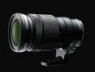

器材库 > APS画幅镜头 > M.ZD ED 40-150/2.8 PRO

详细规格
镜头类型
超远摄变焦镜头
发布日期
2014-09-15
厂家推荐价格
1,500.00 （美元）
焦距
40mm-150mm
等效35mm画幅焦距
80mm-300mm
最大光圈
f/2.8
最小光圈
f/22
镜头结构
16片/10组
非球面镜片
1枚非球面ED镜片,2枚非球面镜片
低/超低色散镜片
1枚超级ED镜片,3枚ED镜片,1枚HD镜片
光圈叶片
9片
最近对焦距离
70cm
最大放大倍率
0.21
驱动马达
MSC
滤镜口径
72mm
镜头卡口
Micro 4/3
防抖
否
颜色
黑色
尺寸
79.4x160mm
重量
（含托架）880g
金色旋风2014-12-22 17:494.92 分
操作性 5.00耐用性 5.00性价比 4.50解像力 5.00色彩还原 5.00机械结构 5.00